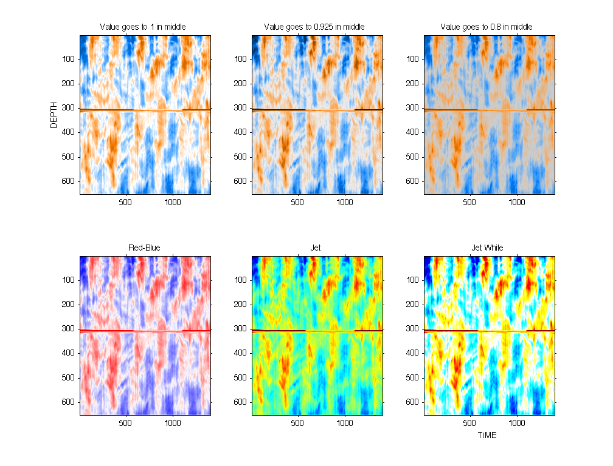
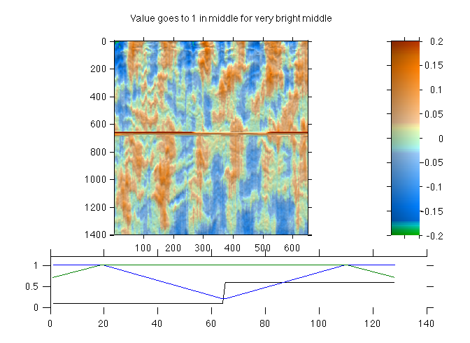
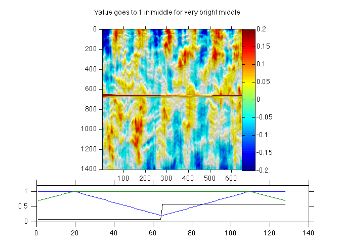
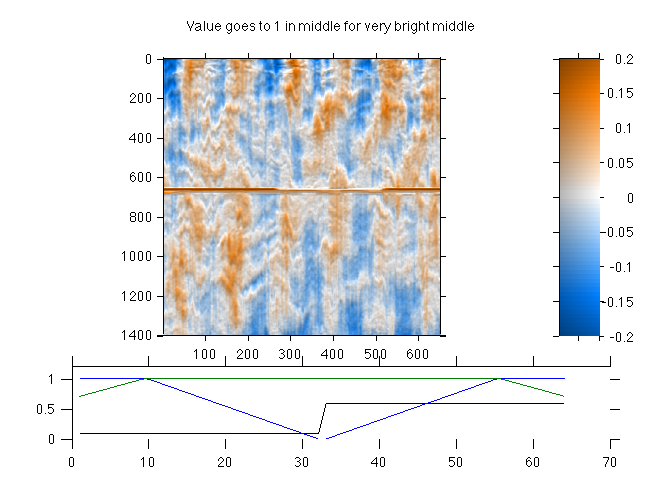
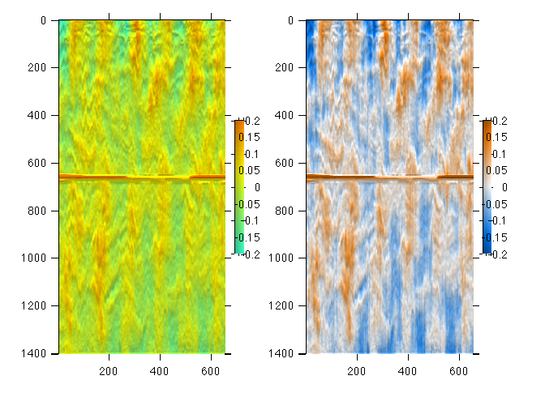

Contents
Two-color colormap based on hueConstsCmp
The colormap is defined by two hues, in this case near cyan and burnt orange. These are complementary colors, so should have equal attraction for our eyes.
The data is velocity data in the ocean showing oscillating tidal flow with depth and in time. The colormap is centered about 0 in all cases. A median velocity has been removed to remove the effect of a mean current in this area (otherwise the plots are very blue). The scar in the middle is bad data.
load sampleU; figure(1);orient landscape;clf; wysiwyg [cmp,hueout] = twohue(7/12,1/12,64,0.5,0,0.6,0.6,1); subplot(2,3,1); imagesc(U-median(U(:))); caxis([-1 1]/5); colormap(cmp); freezeColors; title({'Value goes to 1 in middle'}); ylabel('DEPTH'); [cmp,hueout] = twohue(7/12,1/12,64,0.5,0,0.6,0.2,0.925); subplot(2,3,2); imagesc(U-median(U(:))); caxis([-1 1]/5); colormap(cmp); freezeColors; title('Value goes to 0.925 in middle'); [cmp,hueout] = twohue(7/12,1/12,64,0.5,0,0.6,0.6,0.8); subplot(2,3,3); imagesc(U-median(U(:))); caxis([-1 1]/5); colormap(cmp); freezeColors; title('Value goes to 0.8 in middle'); cmp = jet(64); subplot(2,3,5); imagesc(U-median(U(:))); caxis([-1 1]/5); colormap(cmp); freezeColors; title('Jet'); cmp = redblue(64); subplot(2,3,6); imagesc(U-median(U(:))); caxis([-1 1]/5); colormap(cmp); freezeColors; title('Jet White'); xlabel('TIME'); cmp = coolhot(64); subplot(2,3,4); imagesc(U-median(U(:))); caxis([-1 1]/5); colormap(cmp); freezeColors; title('Red-Blue'); set(datachildren(gcf),'xtick',[0:500:2000])
Shaded colormap with much less value change...
I also like to use shaded colormaps, where the first difference in the vertical adds some shading to the plot. In this case, fewer hues is quite advantageous.
[cmp,hueout] = twohue(7/12,1/12,128,0.3,0.2,0.3,0.7,1); hh = rgb2hsv(cmp); hh(64,1)=hh(63,1); hh(65,1)=hh(66,1); hh(:,1) = conv2(hh(:,1),ones(20,1)/20,'same'); cmp = hsv2rgb(hh); dU = conv2(diffsame(U),ones(3,10)/30,'same');; x= 1:size(dU,1); z=1:size(dU,2); jmkfigure(23,2,0.6);clf subplot(4,1,[1 3]); shadedpcolor(x,z,(U-median(U(:))),dU,[-1 1]/5,[-1 1]/200,0.7,cmp,0); axis square shadedcolorbar('v',[-1 1]/5,0.7,cmp); subplot(4,1,[4]); plot(hueout); set(gca,'ylim',[0 1.2]) suptitle('Value goes to 1 in middle for very bright middle');
Shaded colormap using redblue....
Just a little value change at the very ends...
cmp = redblue(64); dU = conv2(diffsame(U),ones(3,10)/30,'same');; x= 1:size(dU,1); z=1:size(dU,2); jmkfigure(24,2,0.6);clf subplot(4,1,[1 3]); shadedpcolor(x,z,(U-median(U(:))),dU,[-1 1]/5,[-1 1]/200,0.7,cmp,0); axis square colorbar subplot(4,1,[4]); plot(hueout); set(gca,'ylim',[0 1.2]) suptitle('Value goes to 1 in middle for very bright middle'); % Just a little value change at the very ends... [cmp,hueout] = twohue(7/12,1/12,64,0.3,0.0,0.3,0.7,1); dU = conv2(diffsame(U),ones(3,10)/30,'same');; x= 1:size(dU,1); z=1:size(dU,2); jmkfigure(23,2,0.6);clf subplot(4,1,[1 3]); shadedpcolor(x,z,(U-median(U(:))),dU,[-1 1]/5,[-1 1]/200,0.7,cmp,0); axis square shadedcolorbar('v',[-1 1]/5,0.7,cmp); subplot(4,1,[4]); plot(hueout); set(gca,'ylim',[0 1.2]) suptitle('Value goes to 1 in middle for very bright middle'); 
Shaded colormap using Rob Pinkel's map
Rob Pinkel and his students are the first folks who used this shaded visualization in the literature that I am aware of. Rob uses this colormap...
cmp = jet(92); cmp = cmp(40:70,:); dU = conv2(diffsame(U),ones(3,10)/30,'same');; x= 1:size(dU,1); z=1:size(dU,2); jmkfigure(25,2,0.6);clf subplot(1,2,1); shadedpcolor(x,z,(U-median(U(:))),dU,[-1 1]/5,[-1 1]/200,0.7,cmp,0); %freezeColors; hh=shadedcolorbar('v',[-1 1]/5,0.7,cmp); %hh=smallbar(gca,hh,0.6,0.4); %freezeColors(hh); smallbar(gca,hh,0.6,0.4); [cmp,hueout] = twohue(7/12,1/12,64,0.3,0.0,0.3,0.7,1); dU = conv2(diffsame(U),ones(3,10)/30,'same');; x= 1:size(dU,1); z=1:size(dU,2); subplot(1,2,2); shadedpcolor(x,z,(U-median(U(:))),dU,[-1 1]/5,[-1 1]/200,0.7,cmp,0); hh=shadedcolorbar('v',[-1 1]/5,0.7,cmp); smallbar(gca,hh,0.6,0.4);